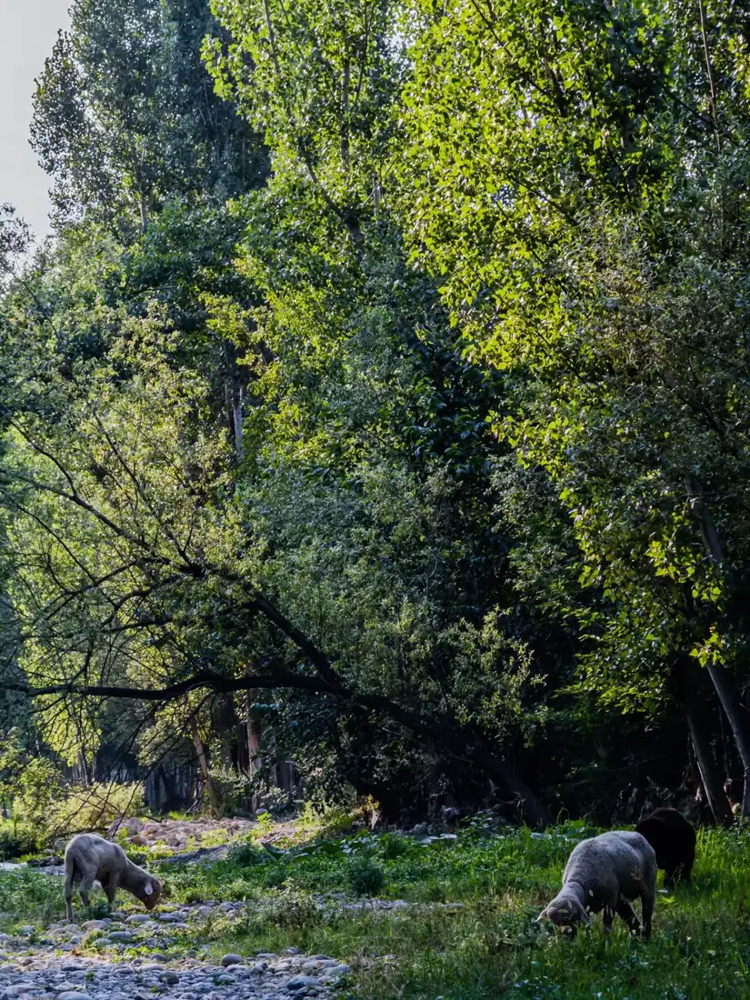
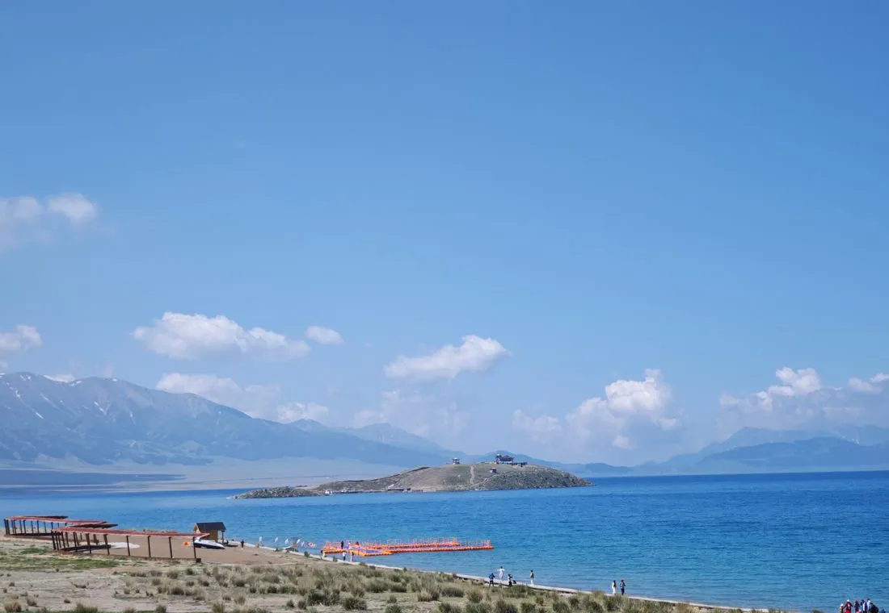
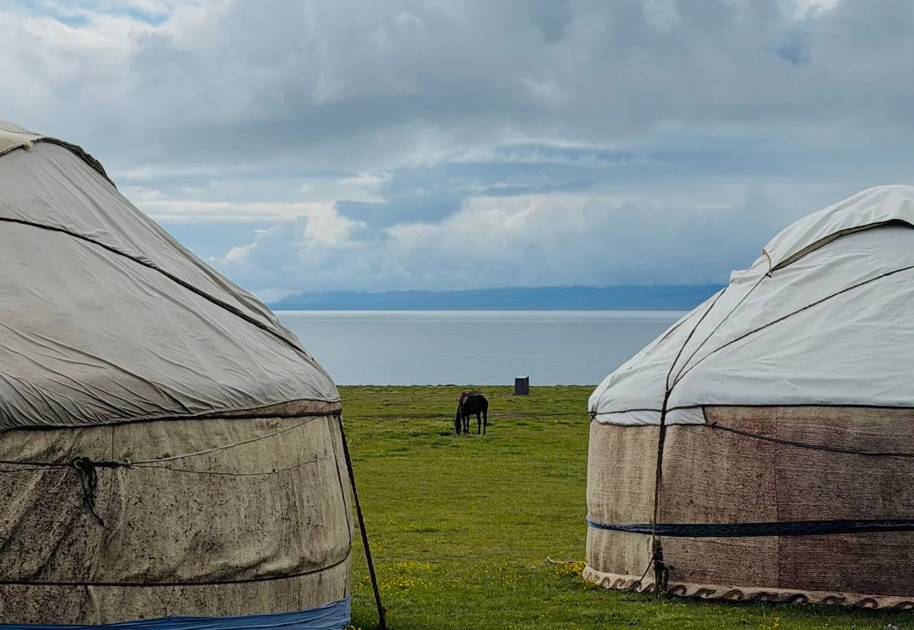
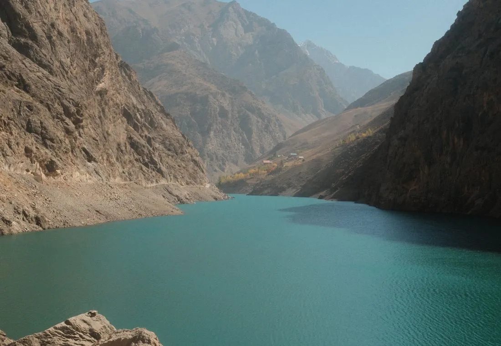
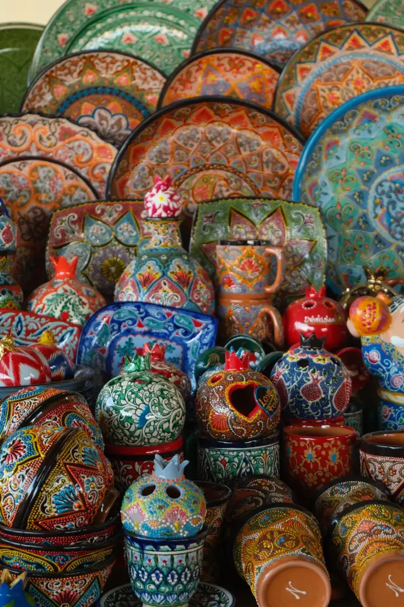
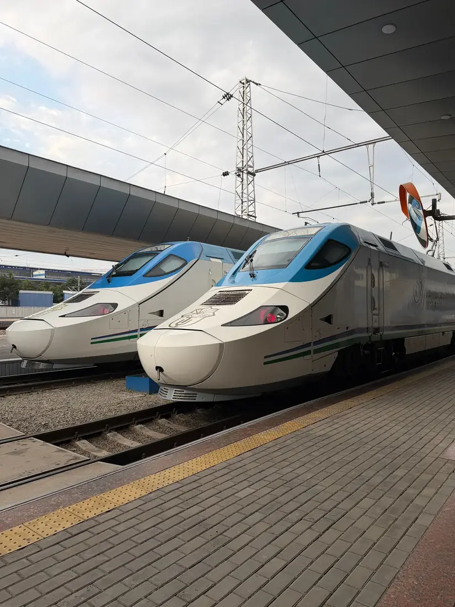
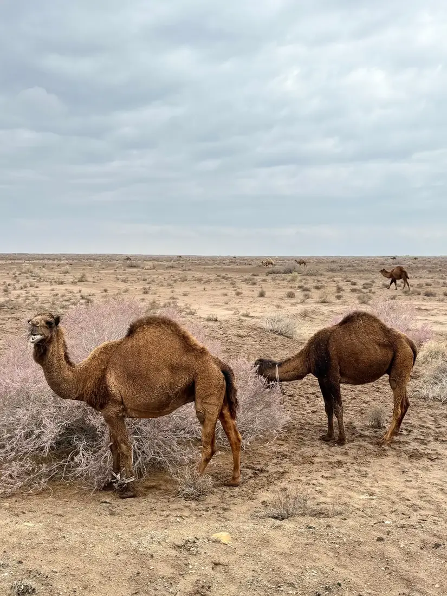

8 days
8 daysUZ
Classic Uzbekistan
Tashkent · Samarkand · Bukhara · Khiva
Tashkent, Samarkand, Bukhara and Khiva in one journey
from… kişi başı
View the tour →Orta Asya'da özel ve küçük grup turları — turkuaz kubbeler, çöl kampları, dağ gölleri ve en sıcak misafirperverlik. Her şeyi biz planlıyoruz, siz sadece seyahat edin.
Orta Asya'nın en güzel yerlerini tek bir seyahatte birleştirin — sınırlar, ulaşım ve rehberler bizden.
Semerkant, Buhara ve Hive — hızlı trenlerle birbirine bağlanan İpek Yolu'nun mavi kubbeli incileri.
Almatı'nın dağları, Çarın Kanyonu'nun kızıl duvarları ve kutsal şehir Türkistan.
Alp gölleri, göçebe yurtları, uçsuz bucaksız yaylalarda atlar ve Issık Göl kıyıları.
Antik Pencikent, Seyhun kıyısındaki Hucend ve dünyanın çatısı Pamirler.
Six proven routes in each country — open any tour to see the map, the day-by-day program and the price.
8 daysTashkent, Samarkand, Bukhara and Khiva in one journey
 5 days
5 daysThe two jewels of the Silk Road in five days
 10 days
10 daysFrom Khiva to Samarkand with a night in a desert yurt
 7 days
7 daysZiyarat to the great imams and Sufi masters
 7 days
7 daysChimgan, a mountain homestay and a yurt camp

6 daysKokand, Margilan silk and Rishtan pottery
 4 days
4 daysThe city, Medeu, Big Almaty Lake and Charyn
 5 days
5 daysCanyons and mountain lakes of south-east Kazakhstan
 8 days
8 daysAlmaty, the lakes, Turkistan and Astana
 4 days
4 daysPilgrimage to the spiritual capital of the Turkic world
 4 days
4 daysAncient petroglyphs, colourful mountains and a singing dune
 4 days
4 daysThe futuristic capital and the 'Kazakh Switzerland'

7 daysThe warm lake, red rocks, eagle hunters and canyons

5 daysYurts, horses and the high lake at 3,016 m
 9 days
9 daysThe best of Kyrgyzstan in nine days
 6 days
6 daysA glacier lake and the Altyn-Arashan hot springs
 6 days
6 daysA stone caravanserai and nights in yurts
 4 days
4 daysA 3,000-year-old city and the great walnut forest

5 daysIskanderkul, the Seven Lakes and ancient Panjakent
 10 days
10 daysThe 'Roof of the World' from Dushanbe to Osh
 3 days
3 daysA short escape to the lakes of the Fann mountains
8 daysThe Silk Road city and the lakes of the Fann mountains
 6 days
6 daysHissar, Istaravshan, Khujand and Sogdian Panjakent
 7 days
7 daysA camping trek between emerald lakes
Aradığınız turu bulamadınız mı? Çiftler, aileler ve gruplar için özel rota hazırlıyoruz.
Yerleri, gece sayısını, otelleri, ulaşımı ve rehberi seçin — rotayı haritada ve tahmini fiyatı anında görün.
Oluşturmaya başla →


Sadece tarihi eserler değil: dev kazanda pişen pilav, pazar sabahları ve yeni dostlarla çay.






Ekibimiz Özbekistan'da yaşıyor; her sokağı, rehberi ve gizli köşeyi biliyor.
Oteller, trenler, transferler, rehberler ve giriş biletleri — tek ve net bir pakette.
Helal yemekler, namaz vakitlerine uygun program ve aileler için rahat tempo.
İngilizce ve Rusça rehberler; Türkçe ve Arapça rehber talep üzerine.
Gizli ücret yok — rezervasyondan önce nelerin dahil olduğunu görürsünüz.
Tüm seyahat boyunca WhatsApp veya Telegram'da gerçek bir temsilci.
Tarihlerinizi, kişi sayısını ve isteklerinizi WhatsApp veya Telegram'dan iletin.
Grubunuz için gün gün program ve net fiyat hazırlıyoruz.
Sizi havalimanında karşılıyor, gerisini biz hallediyoruz.
Birçok ülkenin vatandaşları Özbekistan, Kazakistan ve Kırgızistan'a vizesiz ya da kolay bir e-vize ile gidebilir. Pasaport ülkenizi yazın, güncel kuralları sizin için kontrol edelim.
Şehirler için ilkbahar (Nisan–Haziran) ve sonbahar (Eylül–Ekim) idealdir. Yaz, Kırgızistan ve Tacikistan'ın dağları ve gölleri için en güzel mevsimdir.
Evet. Çiftler ve aileler için özel turların yanı sıra grup turları ve seyahat acenteleri için programlar hazırlıyoruz.
Bölgedeki yemeklerin çoğu helaldir. Programı namaz vakitlerine ve kutsal mekan ziyaretlerine göre de planlayabiliriz.
Bize WhatsApp veya Telegram'dan yazın. Programı onayladığınızda rezervasyonunuzu teyit eder ve ödeme bilgilerini göndeririz.
Evet. Acenteler ve gruplar için karşılama hizmetleri ve partner fiyatları sunuyoruz.
Size en uygun yolu seçin — fikirler, program ve fiyatla dönüş yapalım.